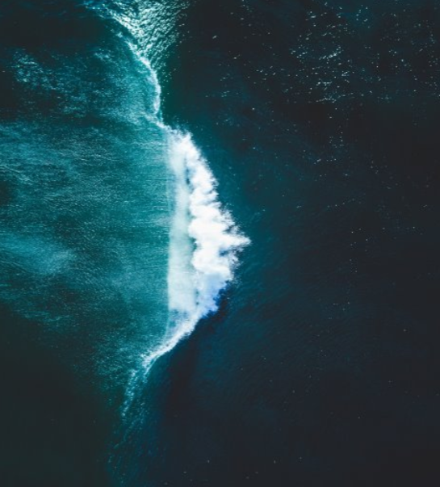
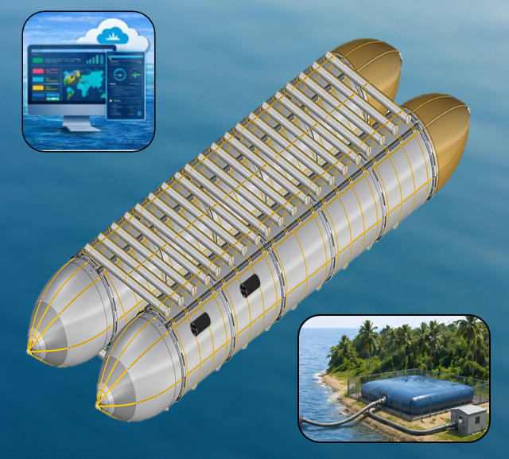
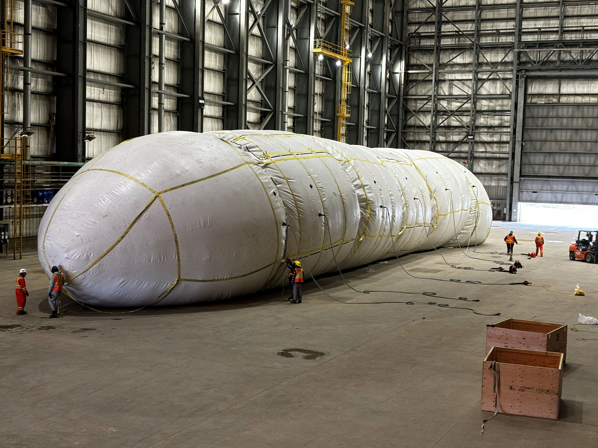
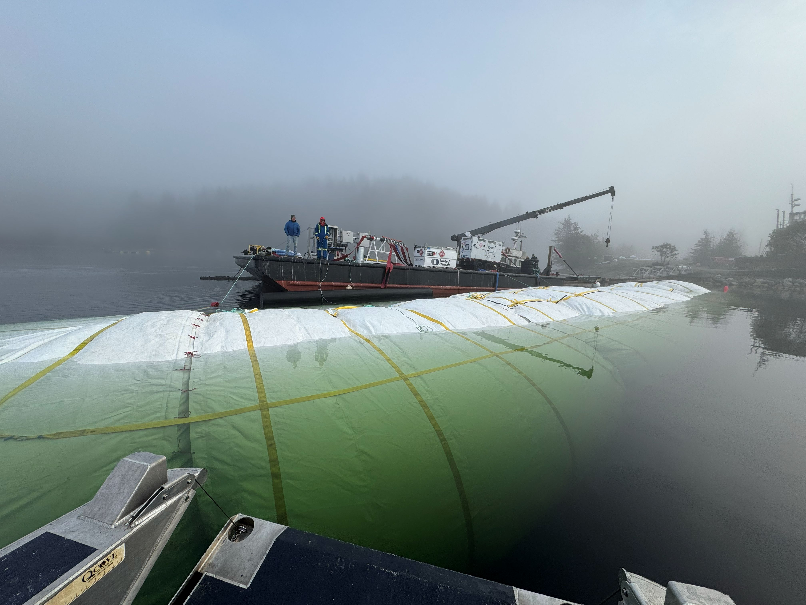
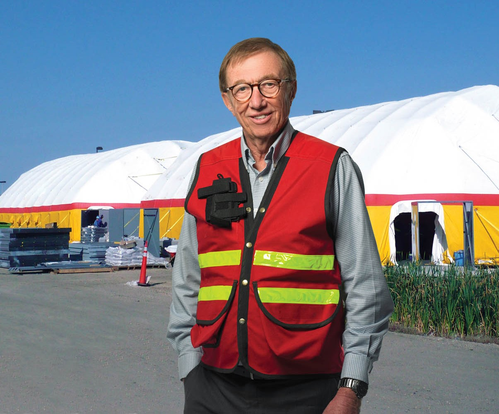

Mobile Water Infrastructure
Water where it’s needed. Infrastructure that moves.
AquaLogic Inc. is building a modular platform to move, store and manage water for communities, industry and regions where permanent infrastructure is constrained.

Canadian-developed mobile water infrastructure
The challenge
Freshwater is not always where people need it.
Communities, industries, and ecosystems depend on reliable access to freshwater. Yet conventional transportation and storage options can be costly, rigid, or difficult to deploy.
We believe advanced fabrics can unlock a more flexible class of water infrastructure.
Platform
One platform,
four capabilities.
AquaLogic brings together transport, storage, water management, and intelligence as a modular service platform.
Meet our flagship innovation, the AquaLogic vessel. This is a fabric-hulled, unmanned vessel for the economical movement of freshwater.

01
Water transport
Flexible, efficient, novel marine vessels designed to move freshwater in bulk.
02
Deployable storage
Fabric-based storage systems support vessel operations and serve temporary, seasonal, and remote water needs .
03
Liquid logistics
Source, deliver, transfer, disperse, and manage water, brine, and other key liquids.
04
Ocean & climate intelligence
Integrated sensors allow the platform to act as a mobile data-gathering station.
Who we serve
Mobile capacity to address real gaps.
AquaLogic is being developed around practical needs where mobile transport, storage, and water management can complement existing systems.
Municipal and regional water resilience
Supply city-scale volumes during seasonal droughts, infrastructure maintenance, or periouds of heightened demand.
Remote, coastal, and Indigenous communities
Deliver water where permanent infrastructure is difficult to extend, expensive to maintain, or slow to build.
Agriculture and seasonal water storage
Move or hold water closer to seasonal agricultural needs without committing to permanent capacity.
Industrial and commercial water logistics
Coordinate source, transfer, and storage of water for industrial and commercial clients. Manage desalination brine and other industrial liquid inputs and outputs.
Emergency and humanitarian response
Provide deployable freshwater capacity when normal water systems are disrupted or temporarily unavailable.
AquaLogic focuses on measurable water needs with a viable source, route, payer or funder, and reason to act. Our projects are feasibility-first and assessed for sustainability.
Current program
Advancing from idea,
to development,
to validation.


- Canadian-founded and developed mobile water-infrastructure platform.
- Developing a single-pontoon system with approximately 3,750 m³ of designed capacity.
- Completed numerical and scale model studies, plus full-size West Coast alpha trial.
- Entering seed round to fund prototype fabrication and early commercialization efforts.
- Preparing for in-water validation in Newfoundland in Fall 2026.
- Certification pathway progressing and operating framework being refined.
- Additional Canadian validation and deployment opportunities under development.
About Us
Built on decades of technical-fabric expertise.
From world-record hot air balloons to blast-resistant shelters, founder Harold Warner’s work has consistently pushed engineered fabrics into demanding new applications.
Rounding out the company is a team of business professionals, engineers, and scientists bringing the platform from concept toward practical deployment.

Let’s talk
Interested in what we’re building?
We welcome conversations with aligned investors, engineering and manufacturing partners, vendors, and freshwater stakeholders.